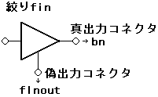

★PROGRAMMER'S GUIDE
★CD通信I/F(CDパート)
★PROGRAMMER'S GUIDE
★CD通信I/F(CDパート)
一 |
Title |
Function |
Function Name［SR］ |
No |
| filtno | ：絞り番号 |
| fad | ：開始フレームアドレス |
| fasnum | ：フレームアドレスセクタ数(0：有効なFAD範囲は存在しない) |
一 |
Title |
Function |
Function Name［S-］ |
No |
| fad | ：開始フレームアドレス |
| fasnum | ：フレームアドレスセクタ数 |
一 |
Title |
Function |
Function Name［SR］ |
No |
| filtno | ：絞り番号 |
| subh | ：サブヘッダ条件 |
一 |
Title |
Function |
Function Name［S-］ |
No |
一 |
Title |
Function |
Function Name［SR］ |
No |
| filtno | ：絞り番号 |
| fmode | ：絞りモード(下位8ビットが有効) |
bit 7 6 5 4 3 2 1 0
[ ][ ][-][ ][ ][ ][ ][ ]
| | | | | | |
| | | | | | +---- 1:ファイル番号（ＦＮ）選択有効 1:無効
| | | | | +------- 1:チャネル番号（ＣＮ）選択有効 1:無効
| | | | +---------- 1:サブモード（ＳＭ）選択有効 1:無効
| | | +------------- 1:コーディング情報（ＣＩ）選択有効 1:無効
| | +---------------- 1:サブヘッド条件を反転する 1:しない
| |
| +---------------------- 1:フレームアドレス範囲有効 1:無効
+------------------------- 1:絞り条件を初期化する 1:しない
・真出力コネクタに出力 | ：絞りのFAD範囲が一致〔かつ〕サブヘッダ条件が一致 |
・偽出力コネクタに出力 | ：絞りのFAD範囲が不一致〔または〕サブヘッダ条件が不一致 |
・真出力コネクタに出力 | ：絞りのFAD範囲が一致〔かつ〕サブヘッダ条件が不一致 |
・偽出力コネクタに出力 | ：絞りのFAD範囲が不一致〔または〕サブヘッダ条件が一致 |
・フレームアドレス範囲 | ：開始FAD＝0、FADセクタ数＝0 |
・サブヘッダ条件 | ：FN, CN, SMMSK, SMVAL, CIMSK, CIVAL全て0 |
・絞りモード | ：全てのビット＝0 |
一 |
Title |
Function |
Function Name［S-］ |
No |
bit 7 6 5 4 3 2 1 0
[-][ ][-][ ][ ][ ][ ][ ]
| | | | | |
| | | | | +---- 1:ファイル番号（ＦＮ）選択有効 1:無効
| | | | +------- 1:チャネル番号（ＣＮ）選択有効 1:無効
| | | +---------- 1:サブモード（ＳＭ）選択有効 1:無効
| | +------------- 1:コーディング情報（ＣＩ）選択有効 1:無効
| +---------------- 1:サブヘッド条件を反転する 1:しない
|
+---------------------- 1:フレームアドレス範囲有効 1:無効
一 |
Title |
Function |
Function Name［SR］ |
No |
| filtno | ：絞り番号 |
| cflag | ：絞り接続フラグ(下位8ビットが有効) |
| bufno | ：真出力コネクタ接続先のバッファ区画番号(CDC_NUL_SEL：切り離し) |
| flnout | ：偽出力コネクタ接続先の絞り番号(CDC_NUL_SEL：切り離し) |
| ・真出力コネクタ | →バッファ区画入力コネクタ |
| ・偽出力コネクタ | →他の絞り入力コネクタ |
bit 7 6 5 4 3 2 1 0
[-][-][-][-][-][-][ ][ ]
| |
| +---- 真出力コネクタの設定フラグ
| 1:設定を変更する(区画に接続／切断)
| 0:変更しない(接続状態は変わらない)
|
+------- 偽出力コネクタの設定フラグ
1:設定を変更する(区画に接続／切断)
0:変更しない(接続状態は変わらない)

一 |
Title |
Function |
Function Name［S-］ |
No |
| bufno | ：真出力コネクタ接続先のバッファ区画番号(CDC_NUL_SEL：未接続) |
| flnout | ：偽出力コネクタ接続先の絞り番号 (CDC_NUL_SEL：未接続) |
一 |
Title |
Function |
Function Name［SR］ |
No |
| rflag | ：リセットフラグ(下位8ビットが有効) |
| bufno | ：バッファ区画番号 |
・リセットフラグ＝0の場合 | ：指定したバッファ区画のデータを全て消去する。 |
・リセットフラグ≠0の場合 | ：バッファ区画番号は無視される。 |
bit 7 6 5 4 3 2 1 0
[ ][ ][ ][ ][ ][ ][-][-]
| | | | | |
| | | | | +---------- 1:全バッファ区画のデータを初期化する 0:しない
| | | | +------------- 1:全区画出力コネクタを初期化する 0:しない
| | | +---------------- 1:全絞り条件を初期化する 0:しない
| | +------------------- 1:全絞り入力コネクタを初期化する 0:しない
| +---------------------- 1:全絞りの真出力コネクタを初期化する 0:しない
+------------------------- 1:全絞りの偽出力コネクタを初期化する 0:しない
・バッファ区画のデータ | ：全て消去される。(CDバッファ内の全データが消去される。) |
・区画出力コネクタ | ：全て未接続状態となる。 |
・絞り条件 | ：絞りモードの設定(CDC_SetFiltMode)での初期化と同様になる。 |
・絞り入力コネクタ | ：全て未接続状態となる。 |
・真出力コネクタ | ：同一番号同士の絞りとバッファ区画が接続される。 |
・偽出力コネクタ | ：全て未接続状態となる。 |
★PROGRAMMER'S GUIDE
★CD通信I/F(CDパート)